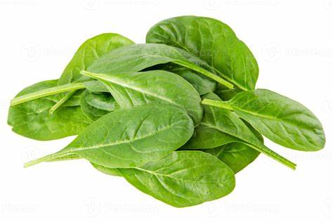

1. Seasons for Growing Spinach

Spinach is a cool-season crop that thrives in moderate temperatures. The best seasons for growing spinach are:
- Fall: Spinach can be planted in late summer to early fall (August to October) for a fall harvest.
- Spring: Plant in early spring (February to April) for a summer harvest in cooler climates.